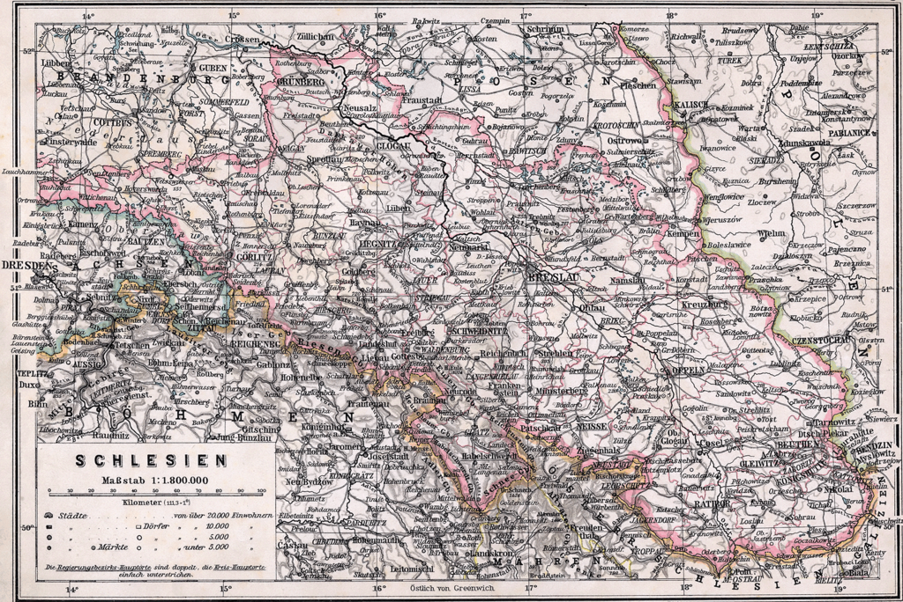

Просвещенная монархия Фридриха Великого. Философия Канта
Захват Силезии
Фридрих Вильгельм I оставил своему наследнику достаточно сильное государство с
эффективной финансовой системой и боеспособной армией. В то же время оно, по сравнению
с Пруссией Фридриха I, носило своего рода аскетический характер. Новый король Фридрих II
стремился уравновесить крайности обоих своих предшественников – тягу к роскоши и сильную заботу о внешнем престиже своего деда с одной стороны и стремление к простоте вкупе с
гораздо большим вниманием к внутренним делам своего отца. Помимо этого, перед Фридрихом стояла теперь задача «округлить» территорию Пруссии и обеспечить ее более «удобными»,
с точки зрения обороны, границами.
Портрет Фридриха Великого. 1870.
По итогам войны за испанское наследство император Священной Римской империи Карл
VI утвердил Прагматическую санкцию, которая постепенно получила признание ведущих европейских государств. Сия санкция, вопреки веками действовавшему в германских государствах
салическому закону, передавала власть в наследственных землях Габсбургов после смерти
Карла его дочери Марии Терезии.
В отличие от остальных государств империи, Бавария отказалась признавать действие
Прагматической санкции и готовилась оспорить права Марии Терезии на престол. Как пишет
К. Кларк, баварский курфюрст Карл Альбрехт зашел в своих амбициях настолько далеко, что
подделал австро-баварский брачный договор XVI века. Согласно сделанной им подделке, в случае прекращения мужской линии Габсбургов их наследственные земли должны были перейти
во владение баварских Виттельсбахов.
Масштабные планы курфюрста поддерживала Франция, которая намеревалась получить
в его лице зависимого от себя императора и, таким образом, укрепить свою гегемонию в Западной Европе. Окончательно симпатии Франции склонились к Карлу Альбрехту после того, как
тот пообещал ей по Нимфенбургскому договору уступить территорию Австрийских Нидерландов (современной Бельгии).

Историческая карта Силезии, 1905 год
В течение 1720-30х годов отношения Пруссии и Австрии стали заметно ухудшаться.
Фридрих Вильгельм I позиционировал себя как имперский патриот и сторонник Габсбургов,
однако те со все большим подозрением и огорчением наблюдали за ростом мощи прусского
государства. Несмотря на то, что король-солдат, желая ускорить эмиграцию зальцбургских протестантов в Восточную Пруссию, формально признал Прагматическую санкцию, между Берлином и Веной начались споры по поводу принадлежности нижнерейнского герцогства Берг,
а также Силезии, до того несколько столетий входившей в состав чешских коронных земель.
Контроль над последней имел важное стратегическое значение, поскольку позволил бы
Пруссии отодвинуть австрийские границы от Берлина. Кроме того, Силезия была центром текстильной промышленности и была наиболее экономически развитым регионом империи Габсбургов. Если ранее Пруссия контролировала лишь среднее и нижнее течение Одера, то благодаря присоединению Силезии она получила бы в свое распоряжение весь Одерский торговый
путь [12].
Прусским войскам следовало занять ее территорию как можно быстрее. Фридрих Август,
правивший Саксонией и Речью Посполитой, хотел установить сухопутную связь между своими
владениями. Он выразил готовность признать Марию Терезию как законную правительницу
Австрии, Чехии и Венгрии, попросив в качестве компенсации именно Силезию. Как пишет К.
Кларк, если бы этот план удался, то Саксония смогла бы охватить Бранденбург с юга и востока,
чем сделала бы себя на долгие годы главным врагом Пруссии [13].
Сословное собрание Силезии присягает Фридриху II в 1741 году, картина Вильгельма Кампхаузена
Первая Силезская война, она же война за австрийское наследство, началась для Габсбургов хуже некуда. Французы и баварцы быстро захватили Прагу и приблизились к Вене, одновременно пруссаки под началом молодого короля Фридриха без серьезного сопротивления заняли
Силезию. Как писал Ф. Кони, местное население видело в нем «не врага, а спасителя своих
прав, веры и достояния» [14]. После победы при Мольвице Фридрих издал 7 ноября 1741 года
манифест, в котором простил крестьянам долги, приказал выдать им хлеб для посева, раздал
деньги самым бедным семьям, даровал дворянам новые чины, а также гарантировал католическому духовенству право на свободное строительство церквей и проведение богослужений [15].
Австрийские войска к тому времени находились в состоянии полной дезорганизации и
являли собой противоположность отлаженной прусской военной машине. Дело даже доходило
до того, что не все солдаты многонациональной армии понимали команды австрийских офицеров, отдававшиеся, разумеется, на немецком. Имелась и другая проблема – венгры относились к австрийцам с ненавистью и презрением, считая тех оккупантами. Чтобы добиться от
них военной помощи, Марии Терезии пришлось ехать на сейм в Прессбург (нынешняя Братислава) и буквально умолять венгерских дворян, обещая взамен дать Венгрии политическую
автономию.
Мартин ван Мейтенс. Портрет Марии Терезии в коронационном платье
Не сумев отбить Силезию, эрцгерцогиня заключила с Фридрихом перемирие, которое
позволило австрийцам перейти в мощное контрнаступление в Южной Германии. Заняв Баварию, габсбургские войска почти что на марше форсировали Рейн и ворвались в Эльзас, создавая реальную угрозу вторжения во Францию. Ситуацию пришлось спасать Фридриху, который
нанес австрийцам ряд поражений, в частности в битве при Гогенфридберге.
Проблемы со здоровьем не позволили Карлу Альбрехту отстоять императорскую корону.
Он умер 20 января 1745 года и в том же году Австрия и Пруссия заключили мир, закрепленный затем на Ахенском конгрессе 1748 года. Австрия уступила Пруссии Силезию в обмен
на признание Фридрихом Франца Стефана императором Священной Римской империи. Что
же касается России, то Елизавета Петровна ограничилась лишь дипломатической поддержкой
Австрии на позднем этапе войны – в 1741 году она сама пришла к власти не без помощи Франции, которая тогда была союзницей Пруссии.
Семилетняя война
Силезские войны положили начало длительному периоду австро-прусского дуализма в
Германии. Если в начале XVIII века Австрия воспринимала усиление Бранденбурга всего лишь
с подозрением, то теперь она относилась к Пруссии как к главной своей сопернице. Мария
Терезия восприняла захват Фридрихом Силезии как предательство, ведь до этого Гогенцоллерны были традиционными союзниками империи. Пока граф Гаугвиц проводил внутренние реформы в Австрии и занимался восстановлением армии, канцлер императрицы Венцель
Антон фон Кауниц искал союзников для будущей войны с Пруссией и стремился поставить
Фридриха в режим дипломатической изоляции. Не последнюю роль в «Дипломатической революции» середины XVIII века сыграла также Франция, не желавшая допустить выхода прусской
армии к Рейну.
Шарль Андре ван Лоо. Портрет Елизаветы Петровны
Русская императрица Елизавета Петровна рассчитывала, помимо защиты Курляндии от
угрозы распространения прусского влияния, отодвинуть границы России как можно дальше
на запад, продемонстрировать свою страну как гаранта европейской безопасности и стабильности и, вместе с тем, умножить боевую славу своего отца Петра Великого. Оппозиционеры,
считавшие, что не стоит воевать с одной из сильнейших армий Европы во имя чужих австрийских интересов, оказались в меньшинстве. Мнение петербургских политиков основывалось на
докладных записках графа Генриха фон Брюля – первого министра короля Польши и курфюрста Саксонии Августа III – и российского канцлера Бестужева, воспринимавших Фридриха как
опасного агрессора [16].
Карл Рехлинг. Фридрих II в битве при Цорндорфе
На мой взгляд распространенная и по сей день в Германии точка зрения о том, что
Семилетняя война была со стороны Пруссии оборонительной, имеет под собой основания.
Австрийцы давно вынашивали планы по ослаблению и даже разделу монархии Гогенцоллернов, стремясь усмирить непокорного вассала. Заняв Силезию, Фридрих устранил опасную
близость австрийской границы к Берлину, а также сам получил плацдарм для вторжения в
австрийскую Богемию. Кроме того, контроль над Силезией позволил прусскому королю охватить располагавшуюся в опасной близости Саксонию и опередить Августа III, который, как мы
уже о том говорили, сам стремился охватить Пруссию с юга (Саксония) и востока (Речь Посполитая).
Когда же Фридрих получил информацию о том, что австрийцы готовятся к наступлению
на Силезию, а также о сосредоточении русских войск в Прибалтике и французских у Рейна,
он решил нанести упреждающий удар и занять Саксонию. Войска Франции, России и Австрии
насчитывали в общей сложности более 240 тыс. человек. Противостояние такой армаде требовало от Пруссии максимального напряжения сил. Ее союзницей была только Британия, опасавшаяся французской оккупации Ганновера. Ради того, чтобы Пруссия имела силы сражаться
на 3 фронта, Лондон был готов не жалеть средства: так с 1758 по 1761 годы она получила 3,35
млн талеров, что составило 1/5 от всех расходов Пруссии в годы Семилетней войны [17].
Карта боевых действий в 1756 году
После взятия Саксонии в конце августа 1756 года Фридрих начал наступление на Богемию, откуда намеревался двигаться к Вене. Однако поражение от австрийских войск возле
Колина сорвало прусские планы блицкрига. Возникшая со стороны Тюрингии угроза наступления франко-имперских войск заставила Фридриха отступить в Саксонию. Чуть позже прусская армия потерпела поражение от русских войск при Гросс-Егерсдорфе.
Перехватив инициативу, австрийцы начали наступление и заняли Силезию, после чего
генерал Хадик совершил свой знаменитый рейд на Берлин. Комендант столицы генерал Рохов
бежал, оставив город на произвол судьбы. Однако надолго Хадик в Берлине не задержался,
поскольку имел слишком малые силы для его удержания от наступавших прусских войск. В
итоге австрийцы ограничились лишь грабежами и взятием контрибуции. Вскоре Фридрих, разбивший французов у Росбаха, нанес австрийцам ответное поражение у Лейтена и, таким образом, восстановил контроль над Силезией.
Эмиль Хюнтен. Битва при Цорндорфе (1858)
Получив известия о болезни императрицы, командующий русскими войсками Апраксин начал их отвод в Курляндию, что было истолковано Елизаветой как подготовка марша
на Петербург с целью участия в перевороте. Выздоровев, царица отправила фельдмаршала
в тюрьму, где тот умер спустя год, а на его место назначила генерала Фермора. Тот продолжил движение к Берлину, осадил Кюстрин и вскоре вступил в схватку с Фридрихом при
Цорндорфе. Сражение фактически закончилось вничью и, как и параллельно шедшая битва с
австрийцами при Хохкирхе, не повлекло для пруссаков за собой существенных последствий.
Куда успешнее они действовали против французов, разбив их при Рейнберге, Крефельде и
Мере.
Разгром от русских войск при Кунерсдорфе, казалось, должен было стать финалом в
истории прусского государства. Даже Фридрих, стоически переносивший до того горечь поражений, утратил веру в возможность сражаться дальше. Его самые преданные генералы и лучшие друзья погибли, а от армии – армии, которая с таким трудом создавалась прадедом
Фридриха Великим Курфюрстом и его отцом, королем-солдатом, – теперь почти ничего не
осталось, иссякли даже резервы…
Но в тот самый момент, когда казалось, что Пруссия стоит на краю гибели, между ее врагами начался раздор. Выяснилось, что на деле Франция, Австрия и Россия настолько боятся
друг друга, что никто из них не хочет уничтожать монархию Гогенцоллернов. Они не знали, как заменить Пруссию в образовавшейся пентархии великих держав Европы. В итоге волей Провидения Пруссия получила шанс на дальнейшую борьбу за свою честь и свое существование.
Капитуляция Берлина 28 сентября 1760 года. Картина Александра Коцебу.
Несмотря на то, что Фридрих успел к началу 1760 года восстановить свою армию, уже
в октябре он вновь едва не потерял столицу. Летучий отряд саксонца Тотлебена, служившего
под русскими знаменами, занял Берлин, но, как и в свое время Хадик, был вынужден из-за
своей малочисленности срочно ретироваться. Через месяц, 3 ноября 1760 года, состоялась
последняя действительно крупная битва Семилетней войны – сражение при Торгау. Прусские
и австрийские немцы ожесточенно проливали кровь друг друга, инициатива в этой схватке
постоянно переходила из рук в руки. Даун, подобно Наполеону при Бородино, уже успел примерить на себя лавры победителя, но атаки Цитена и Фридриха с севера и юга привели к разгрому австрийцев. Впрочем, эта битва едва не уничтожила саму прусскую армию: за всего лишь
один день она потеряла 40 % своего состава.
В 1761 году Россия предприняла последнюю попытку разгрома Пруссии. Войска Румянцева заняли Кольберг, откуда готовились наступать на Берлин. Истощенная Пруссия больше
не могла сражаться и пыталась вести переговоры о мире. Но Елизавета, дочь Петра Великого, была исполнена решимости победить любой ценой и утвердить славу русского оружия в
Европе. Смерть императрицы стала для Фридриха «вторым чудом Бранденбургского дома» –
наследник Елизаветы Петр Федорович, он же принц Карл Петер Ульрих Гольштейнский, не
собирался воевать против своего кумира. Более того, вскоре он заключил мир с Фридрихом и
вернул ему все земли, завоеванные русской армией.
Возмущению русского офицерского корпуса не было предела. Россия, потерявшая на
полях Пруссии 138 тысяч своих сынов, не получила по итогам войны никакой компенсации
– выходило, что все жертвы были принесены напрасно. Такая антинациональная политика,
обусловленная понятным, но все же слепым обожанием Фридриха, в итоге погубила Петра.
Прусская принцесса София Фредерика, она же великая княжна Екатерина Алексеевна, воспользовалась настроениями дворянства и свергла нелюбимого мужа. Но даже она не стала продолжать войну с Фридрихом, которая теперь уже не имела никакого смысла. Что же касается
самого прусского короля, то он по мирному договору, заключенному в Губертусбурге гарантировал свои права на Силезию, взамен обязавшись поддержать на выборах императора Священной Римской империи
сына Марии Терезии эрцгерцога Иосифа.
Внутренняя политика Фридриха Великого
Государство Фридриха Вильгельма I имело абсолютистско-полицейский характер.
Король-солдат привык лично следить за тем, чтобы отданные им распоряжении соблюдались
везде и в полном объеме. Известны даже случаи, когда Фридрих Вильгельм, прогуливаясь по
Берлину, избивал тростью горожан, которые, по его мнению, бездельничали. Впрочем, это и не
удивительно, если вспомнить, какой у короля был характер и в какой строгости он воспитывал
своих детей.
Фридрих II начал свое правление с отмены пыток. Действуя согласно идеям Монтескье,
он отделил судебную власть от исполнительной, а в 1749 году издал «Свод законов Фридриха».
Стремясь несколько демократизировать прусское общество, король отменил цензуру для неполитических газет [18]. После того, как прусские войска заняли территорию Силезии, Фридрих
заменил местных чиновников, на произвол которых жаловалось население, на избранных
самими силезцами [19].
Что же касается традиционной для Гогенцоллернов веротерпимости, то по этой части
король-философ умудрился превзойти всех своих предшественников. Он объявил, что Пруссия принимает у себя всех «честных людей» независимо от вероисповедания, будь те мусульмане, иудеи, католики или даже язычники. Живым воплощением такой политики Фридриха
стал собор святой Ядвиги в Берлине – первый католический собор в столице Пруссии, создававшейся изначально как протестантское государство.
Адольф фон Менцель. Портрет Фридриха Великого после Семилетней войны
Фридрих развивал создававшуюся его отцом фискальную систему. Финансовые чиновники получили право в любое время дня и ночи обыскивать частные дома, дабы ни один товар
ни ушел от налогообложения. Стремясь наполнить королевскую казну, он вводил налоги на
товары первой необходимости, такие как мясо, пиво и водка. В результате этого цены на них
стали расти, что привело к нападкам на короля и постепенному падению его популярности на
закате правления [20].
Фридрих предоставлял дворянам большие земли и именно из них комплектовал офицерский корпус; вместе с тем он строго следил за тем, чтобы дворяне не занимались торговлей и не чинили произвол в отношении собственных крестьян. Преступления дворян карались
гораздо суровее, чем проступки крестьян. Фридрих добивался того, чтобы дворяне, желающие
улучшить свое благосостояние, занимались своими поместьями и с уважением относились к
тяжелому труду крестьян [21]. Таким образом, он стремился дисциплинировать элиту прусского
государства, развить в ее представителях чувство долга и чести.
Король-философ заботился также и о введении всеобщего начального образования.
Согласно Генеральному земельному школьному регламенту от 12 августа 1763 года, в Пруссии вводилось общеобязательное школьное обучение детей в возрасте 5-14 лет. Создавались
система экзаменов, учебные журналы, расписывался регламент занятий. Использование учебников, не признанных таковыми государством, запрещалось; как правило, для обучения чтению и письму использовались церковные книги. Плата за обучение варьировалась от 6 до 9
пфеннигов. Учителям запрещалось заниматься любой порочащей их социальный статус деятельностью [22].
Фридрих II осматривает посадки картофеля
Отдельного упоминания заслуживает история с тем, как Фридрих положил начало разведению в Пруссии картофеля. Изначально сей южноамериканский плод не пользовался большой популярностью среди пруссаков – отношение к нему было примерно, как в России, где
картофель называли «чертовым яблоком». Люди понятия не имели, что картофель надо варить
и жарить и ели его сырым, от чего, разумеется, заболевали.
Фридрих понял, что законы, повелевающие сажать картофель, не работают, и тогда
решил сменить стратегию. Картофель объявили королевской собственностью и стали сажать
только в личных садах Фридриха, приставив к нему охрану. По замыслу короля, в буквальном
смысле запретный плод должен был возбудить любопытство людей – караулу было приказано
стоять исключительно для вида. И это сработало: крестьяне стали беспрепятственно залезать
в королевский огород и красть картофель, после чего сажать его у себя.
В годы Силезских и Семилетней войн в Пруссии крестьяне могли питаться исключительно картошкой, поскольку запасов пшеницы в стране попросту не осталось. Фактически
своей хитростью король-философ спас пруссаков от голода и способствовал распространению
картофеля по всей Германии. Благодарные немцы до сих пор кладут на могилу Фридриха в
Потсдаме картошку.
На восстановление прусской экономики после окончания Семилетней войны, по тем
цифрам, что приводит Ф. А. Кони, суммарно ушло почти 25 млн талеров. Причем все эти
деньги составляли военные контрибуции, средства самого короля и частные пожертвования –
государственная казна осталась практически нетронутой. Для восстановления сельского хозяйства Фридрих освободил из армии 40000 крестьян. Кроме того, он временно отменил налогообложение ряда провинций, выделял крестьянам запасы зерна из армейского провианта (42 тыс. четвертей), а также ассигновал средства на выкуп заложенных имений и ремонт разрушенных заводов и мануфактур [23].
Нельзя, наконец, не отметить заслуги Фридриха по изменению архитектурного облика
Берлина. Именно в годы его правления в прусской столице были построены Королевская библиотека, дворец принца Генриха и Государственный оперный театр. Кроме того, король-философ восстановил Академию наук, находившуюся в период правления его отца в упадке; одним
из ее членов, кстати говоря, был всемирно известный кенигсбергский философ Имманиул
Кант. Также Фридрих активно покровительствовал искусству и музыке, поддерживал талантливого композитора Иоганна Себастьяна Баха и его сына Карла Филиппа.
Внешняя политика Пруссии после Семилетней войны
Сближение Австрии и Франции, а также ухудшение отношений Пруссии и Британии
заставило Фридриха обратить свой взор на Россию, дабы избежать грозившей ему международной изоляции. С этого момента польский вопрос вновь обрел актуальность: политика Станислава Понятовского, направленная на централизацию Речи Посполитой, вызывала недовольство Берлина и Петербурга. Перед Веной, в свою очередь, также открылась возможность за счет
присоединения Галиции компенсировать крайне болезненную потерю Силезии. Таким образом, раздел польско-литовского государства стал лишь вопросом времени.
Европейские коалиции после Дипломатической революции начала 1750-х гг.
По итогам Первого раздела Речи Посполитой в 1772 году Пруссия получила сухопутный
коридор к Кенигсбергу – таким образом, Гогенцоллерны наконец-то установили территориальное единство своих восточных территорий. Присоединение польской провинции Королевская
Пруссия – так назывались земли Западной Пруссии, входившие в состав Речи Посполитой, –
позволило Фридриху наконец-то принять титул «король Пруссии» вместо использовавшегося
с 1701 года титула «король в Пруссии».
Конфликт с Австрией из-за баварского престолонаследия укрепил авторитет Пруссии в
Германии. Фридрих показал себя защитником прав и свобод германских государств, дав решительный отпор Иосифу. Последний стремился спасти власть и авторитет Габсбургов в Священной Римской империи, потому пожелал уравновесить усилившиеся позиции Гогенцоллернов
территориальными приобретениями.
Карл VII Виттельсбах - курфюрст Баварии с 26 февраля 1726 года. Во время войны за австрийское наследство - король Чехии и император Священной Римской империи.
Бавария находилась ближе всех германских государств к Австрии, а австрийцы и
баварцы, по сути, говорят на одном южнонемецком диалекте. Кроме того, Бавария еще с начала
18 века пользовалась серьезной дипломатической поддержкой Франции, что позволяло той
влиять на внутренние дела империи. Если бы австрийские войска сумели аннексировать Баварию, чей правящий род Виттельсбахов пресекся накануне, то вполне возможно вся история
Германии пошла бы совершенно другим путем.
Однако прусский король Фридрих заявил о своих намерениях защищать суверенитет германских государств, а также создать систему коллективной безопасности, которая была явно
направленна против Австрии. Иосиф II сам выставил себя в роли агрессора и в конце концов
оказался в дипломатической изоляции, поскольку ни Франция, ни Россия не стали поддерживать его амбиции.
Мария Терезия настолько противилась милитаризму своего сына, что провела за его спиной тайные переговоры с Фридрихом. В итоге войну за баварское наследство удалось завершить довольно быстро – строго говоря, она войной-то даже не была, поскольку солдаты враждебных армий истребляли больше свеклы и картошки, чем своих противников. Тешенский
договор 1779 года определил Францию и Россию как гарантов мира и имперской конституции [24], что стало подтверждением неспособности Священной Римской империи самостоятельно преодолеть внутреннюю раздробленность. В данном смысле слова Вольтера о том, что
«Священная Римская империя не была ни Священной, ни Римской, ни тем более империей»,
получили очередное наглядное подтверждение.
Адольф Менцель. Встреча Иосифа II и Фридриха II в Нейсе (1856)
Однако Иосиф, желавший стяжать военную славу подобно своему кумиру Фридриху, все
никак не унимался. После смерти сдерживавшей его матери Марии Терезии он предпринял
очередную попытку присоединить Баварию. Император отправил ее курфюрсту Карлу Теодору
на первый взгляд заманчивое предложение обменять Баварию на Австрийские Нидерланды,
обещая также предоставить тем статус королевства. В случае отказа Иосиф угрожал военным
вмешательством, что испортило в итоге все дело. Фридрих сумел доказать Екатерине необоснованность притязаний императора, после чего Россия дала понять, что не потерпит применения Австрией силы. В конце концов из-за угрозы оказаться в международной изоляции Иосиф
был вынужден уступить [25].
В войне за Баварское наследство Фридрих показал, что действует исключительно против Габсбургов, нарушающих имперскую конституцию и права суверенных княжеств; ради
обеспечения защиты последних он создал антиавстрийский Княжеский союз. Фактически,
именно из-за действий прусского короля Австрия начала терять свой авторитет в Германии.
Реформы, которые пытался проводить император Иосиф, не принесли существенных результатов из-за революции в Бельгии, протестов в Венгрии против введения немецкого языка и
постоянных внешнеполитических неприятностей. Таким образом, Фридрих II способствовал
провалу последней попытки Габсбургов централизовать Священную Римскую империю германской нации и, тем самым, предотвратить ее крах.
Личность Фридриха
Как пишет Б. Бонвеч [26], Фридрих обладал большим и острым умом, а также холодным
рассудком, позволявшим ему сохранять самообладание даже в самых критических ситуациях,
пусть и с огромным трудом. Так во время взятия русскими войсками Берлина, когда казалось,
что Пруссия обречена, король изъявлял желание покончить с собой, однако брал себя в руки
и всякий раз собирал новую армию.
Обратной стороной стоицизма короля-философа была его неспособность к состраданию
и проявлению своих чувств – таков был результат деспотичного воспитания его отца, Фридриха
Вильгельма. Король-солдат, как мы о том уже упоминали, подавлял склонность Фридриха к
изучению латыни и игре на флейте, муштруя того в жестком протестантском духе. В итоге даже
те развлечения, которые Фридрих себе позволял, уже будучи королем, никак не избавляли его
среди европейских монархов от репутации стоика и аскета. До конца своей жизни он оставался
мизантропом и чувствовал себя одиноким человеком [27].
Фридрих II играет на флейте в своем дворце Сан-Суси
Король-философ, желая отгородиться от бурной политической жизни Берлина, мешавшей ему сосредоточиться на чтении любимых философов, писательстве и занятии музыкой,
построил в Потсдаме загородную резиденцию Сан-Суси. С французского название прямо так и
переводится – «без забот». «Старый Фриц» предпочитал французскую литературу немецкой, а
в свободное время в основном говорил по-французски. Фридрих, как и впоследствии Гитлер,
стремился к единоличному правлению государством и практически никак не взаимодействовал с кабинетом министров. Со временем он становился, как и многие другие правители, все
более консервативными боялся роста в Пруссии, подобно Франции, революционных настроений на почве идей Просвещения.
Фридриху часто приписывают пристрастия к гомосексуализму, пытаясь объяснить тем
самым его прохладные отношения с супругой Елизаветой. Королева была внешне вполне привлекательной женщиной, но она не могла в силу своего интеллектуального развития разделять
интересы мужа. Однако несмотря на то, что Фридрих в целом питал антипатию к женщинам,
он был способен по достоинству оценить их ум. Король-философ имел очень теплые отношения со своей сестрой Вильгельминой – они оба имели большую страсть к музыке и науке.
Антуан Пен. Портрет Елизаветы Кристины Брауншвейгской, супруги Фридриха Великого
Даже к своей главной сопернице – «королеве с сердцем короля» Марии Терезии – Фридрих относился с искренним уважением. Вообще же противостояние этих двух самых могущественных германских правителей 18 века вышло вполне символичным. Они оба как стояли
по разные стороны политических баррикад, так и имели совершенно отличные друг от друга
образы жизни. Фридрих, как мы о том говорили чуть выше, был близок к атеизму, имел закрытый характер, будучи в то же время весьма разносторонним в интеллектуальном плане человеком и был вынужден часто вести политику при помощи военной силы.
В свою очередь Мария Терезия была ревностной католичкой и любящей супругой, сумевшей, в отличие от Фридриха, познать семейное счастье. Она не обладала таким большим кругозором и выдающимся умом, как прусский король, но по-матерински заботилась о благе своих
подданных и доверяла проведение реформ своей команде профессионалов. Во внешней политике Мария Терезия прибегала не к военной силе, а к искусству дипломатии, всеми силами
стремясь поддерживать мир в Германии и Центральной Европе.
Философия Канта
Одной из центральных фигур европейской философии 18 столетия стал Иммануил Кант,
уроженец Кенигсберга. В своих философских взглядах Кант отводил Богу важную роль гаранта
свободы воли и бессмертия человеческой души. Однако в то же время он настаивал на том, что
свобода мысли невозможна без критического переосмысления религиозных догм, называемых
истинами.
Иоганн Готлиб Беккер. Портрет Иммануила Канта (1768)
Учение Иммануила Канта об этике долга стало на следующие почти что 100 лет духовным руководством прусского и германского офицерства. Философ считал, что нормы поведения формируются на основе воли, происходящей из практического разума – источника всего
морального поведения. Следовательно, без свободы воли последнее будет невозможным, ибо
человека нельзя научить добродетелям при помощи грубой силы. Долг, по Канту, представляет собой необходимость действия из уважения к нравственному закону – категорическому
императиву. Вместе с тем философ отнюдь не настаивал на том, чтобы все время идти ради
исполнения долга вопреки естественным желаниям, в первую очередь стремлению к счастью
и любви.
Кант призывал людей вести себя так, как будто все моральные и общественные законы
соответствуют их образу действий. Другими словами, это можно было сказать так: «Если
хочешь, чтобы люди вокруг тебя были порядочными, сам веди себя достойно». Человек,
согласно взглядам философа, является не средством, а самоцелью и заслуживает к себе соответствующее обращение. Другой вопрос, что для соблюдения общественного порядка ему
нужно подавлять свой эгоизм и представлять свое «я» не как весь мир, а как часть мира, в котором живут и другие люди, другие личности. Философия Канта противоречила либерализму в
том смысле, что тот считал целью государства не счастье отдельного человека, а реализацию
общей нравственной идеи [28].
Король Фридрих, в свою очередь, также стремился развивать в своих офицерах свободу
воли и мышления. Он предоставлял своим военачальникам как ответственность за исполнение
долга, так и свободу принятия решений исходя из личного понимания текущей обстановки.
Благодаря этому прусская армия сохраняла наступательный дух и маневрировала гораздо
лучше, чем ее противники. Прусские офицеры проникались преданностью к своему королю,
потому что тот доверял им – как итог армия Фридриха часто доказывала свою силу на поле
боя и со временем обрела славу непобедимой.

_-_Google_Art_Project.jpg)
.jpg)